Zeta
Designed and built the product
How we repositioned PayZapp Wallet for the people already using PayZapp
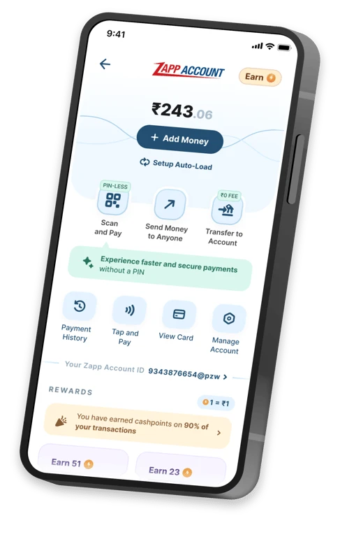
Designed and built the product

Set priorities and approved what shipped

Co-led product
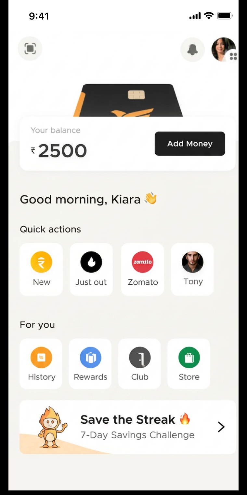
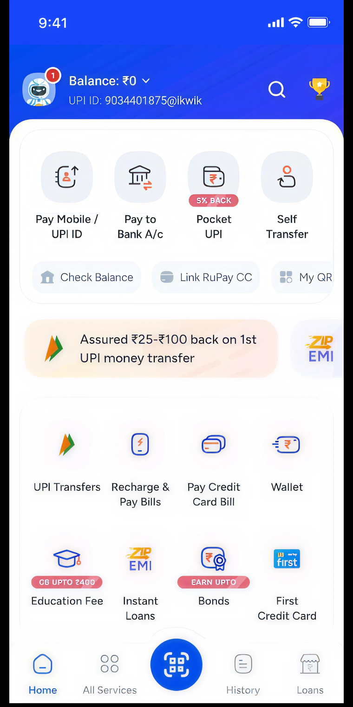
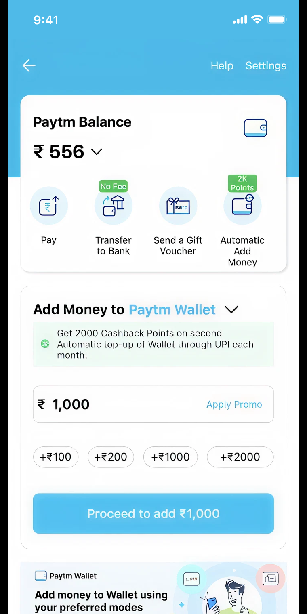
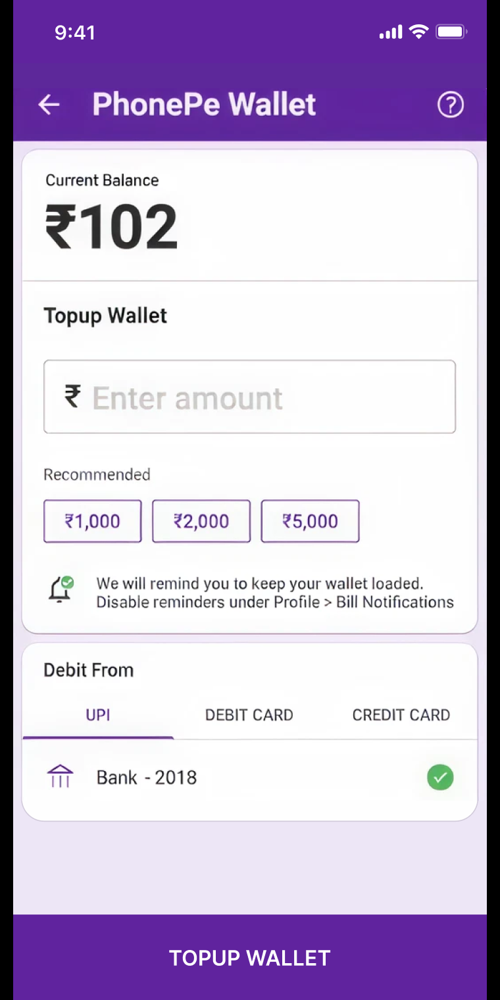
But it had struggled to find a clear place in the market.
To give the wallet a clearer identity and purpose.
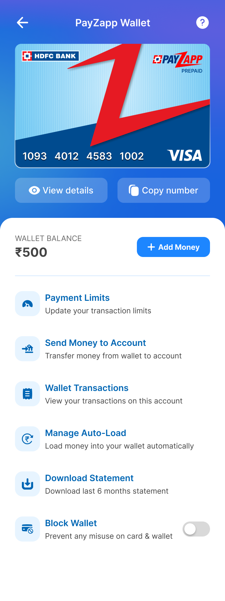
A payment account for all your daily spends
We looked at
our competitors
We interviewed
wallet users
But when we looked
at our own data
The most obvious issue
got highlighted
Directional visualization, not plotted values
Despite PayZapp's healthy user base, adoption of PayZapp Wallet was very low.
Most PayZapp users were salaried, aged 25–40, and based in Tier 2 and Tier 3 cities.
For a strategic experiment, proving value with existing PayZapp users was the more credible first move.
Lead with the value users would feel, not the feature terminology behind it.
Make loading money the core action of the Zapp Account experience.
Leverage familiar PayZapp contexts to educate users even reinforce value.
We will follow the experience in this sequence.
A simple carousel to introduce one value proposition at a time. It began with the benefit that brought the user in, then moved through the remaining benefits.
We preserved the structure existing PayZapp users already understood.
We kept redemption visible and tied directly to the balance because many users already treated the wallet as a Cashpoints conversion tool.
It was the first thing users came to check, so it led the page hierarchy.
Competitor patterns validated the action. Negative space and subtle motion kept it visually dominant.
Placed directly beneath Add Money, it borrowed visibility from the same loading intent.
Behavior-led messages pointed to relevant actions and adapted to the user’s lifecycle state.


Inspired by our own home screen


What's next?
Apart from PayZapp, it will also be available as a standalone product across various banking digital touch points for HDFC. Target go-live: October–November.
A self-set budget made monthly spending visible against a simple progress meter.
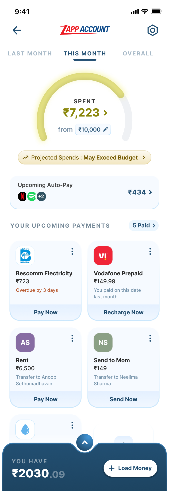
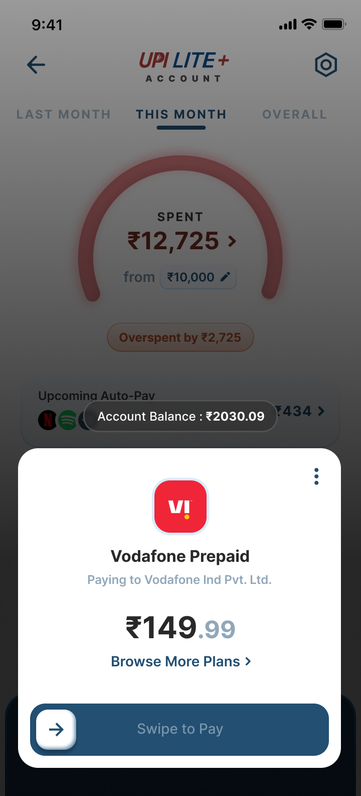
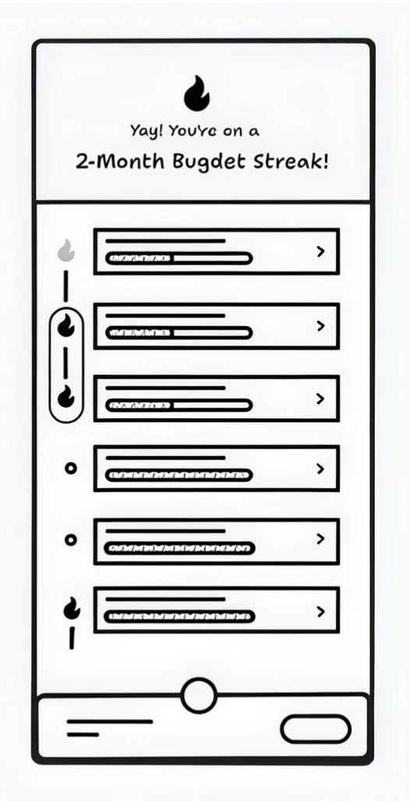
Monthly patterns, upcoming spends, and category cues could make the account useful beyond transactions.
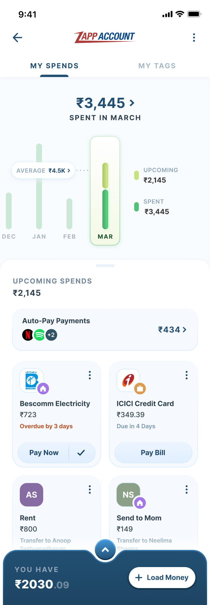
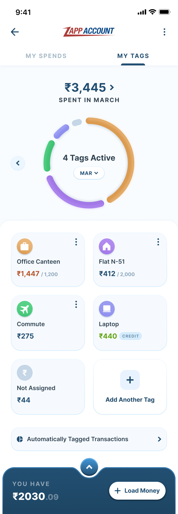
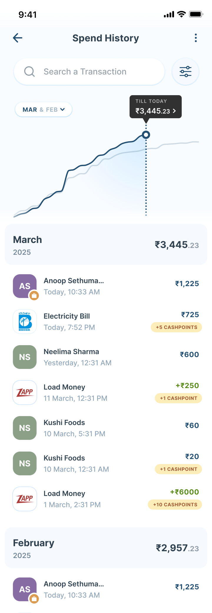
Dedicated monthly and goal-based pockets could help people reserve money before spending it.
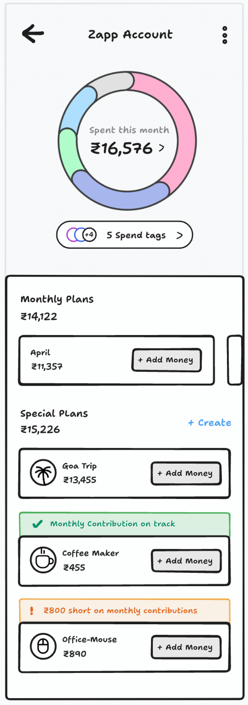
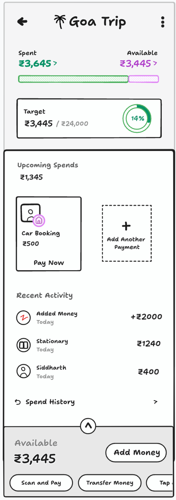
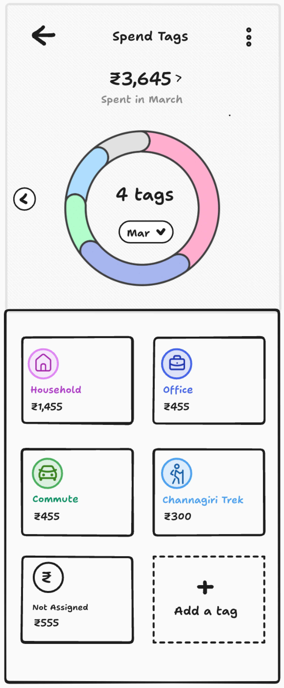